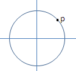
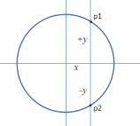

In its simplest form, the equation of a circle is What this means is that for any point on the circle, the above equation will be true, and for all other points it will not. This is simply a result of the Pythagorean Theorem. In the figure above, you will see a right triangle. The hypotenuse is the radius of the circle, and the other two sides are the x and y coordinates of the point P. Applying the Pythagorean Theorem to this right triangle produces the circle equation.
As you drag the point P around the circle, you will see that the relationship between x,y and r always holds. The radius r never changes, it is set to 20 in this applet. So x and y change according to the Pythagorean theorem to give the coordinates of P as it moves around the circle.
Therefore, the idea here is that the circle is the locus of (the shape formed by) all the points that satisfy the equation.
A circle with the equation Is a circle with its center at the origin and a radius of 8. (8 squared is 64).
The equation has three variables (x, y and r). If we know any two, then we can find the third. So if we are given a point with known x and y coordinates we can rearrange the equation to solve for r:

The negative root here has no meaning. Note the this only works where the circle center is at the origin (0,0), because then there is only one circle that will pass through the given point P. This finds the radius r of that circle.The equation has three variables (x, y and r). If we know any two, then we can find the third. So if we are given the radius r, and an x coordinate, we can find y by rearranging the equation:

Notice how this has two answers, due to the plus/minus. This is expected since there are two points on the circle that have the same x coordinate.
On the right it is shown that for a given x coordinate,we see the two points p1 and p2 that share that x-coordinate.
Then we just add or subtract fixed amounts to the x and y coordinates to bring it back to the origin. For more on this see General Equation of a Circle.
Instead of using the Pythagorean Theorem to solve the right triangle in the circle above, we can also solve it using trigonometry. This produces the so-called parametric form of the circle equation as described in Parametric Equation of a Circle. This parametric form is especially useful in computer algorithms that draw circles and ellipses. It is described in An Algorithm for Drawing Circles.